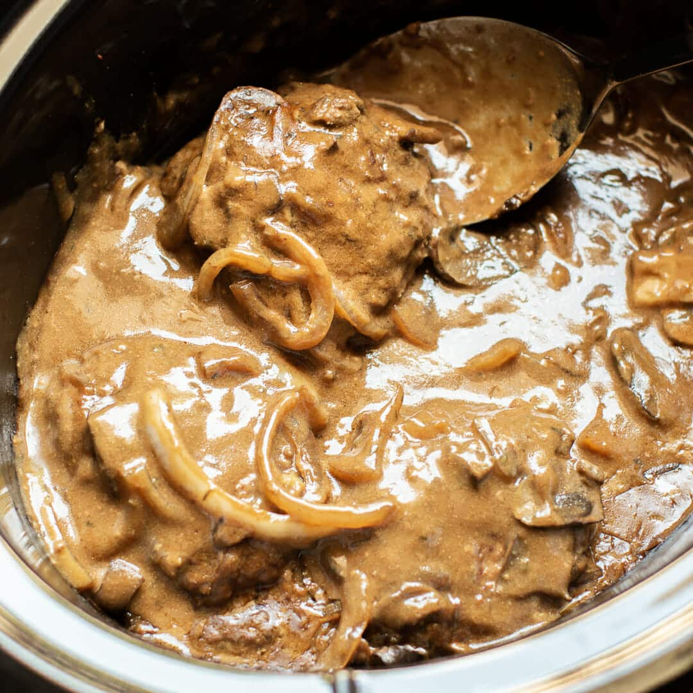
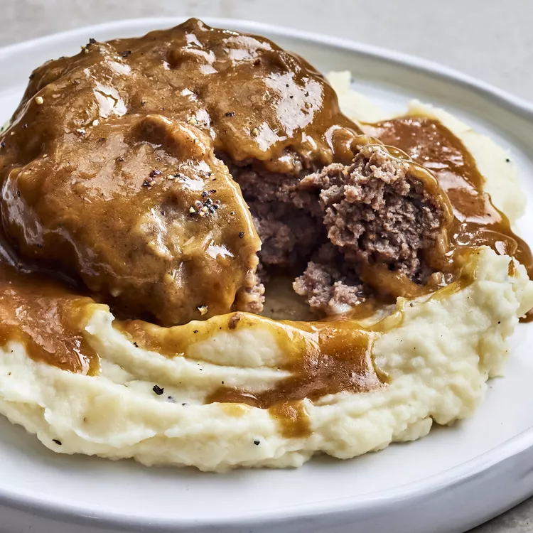

The classic combination of cheesy, herb-infused tomato sauce and crisp, oven-baked eggplant never gets old.
Easy eggplant Parmesan recipe gets high marks in ease and flavor from our community of home cooks.
Use straightforward pantry ingredients to create Italian-inspired magic with this top-rated recipe.
This Salisbury steak recipe comes together quickly and does not need a lot of time in the slow cooker.
It's a delicious way to add flavor to ground beef and the children love it! The gravy is delightful served over mashed potatoes.

Combine ground beef, bread crumbs, milk, and onion soup mix together in a large bowl until well combined; shape into 8 patties.
Heat oil in a large skillet over medium-high heat.
Dredge patties in flour just to coat, and quickly brown on both sides in the hot skillet. Place browned patties into the slow cooker stacking alternately like a pyramid.
Mix condensed soup, water, and au jus mix together in a medium bowl; pour over the beef patties.
Cook on Low until ground beef is well done, about 4 to 5 hours.
Bake in the preheated oven until golden brown, about 35 minutes.